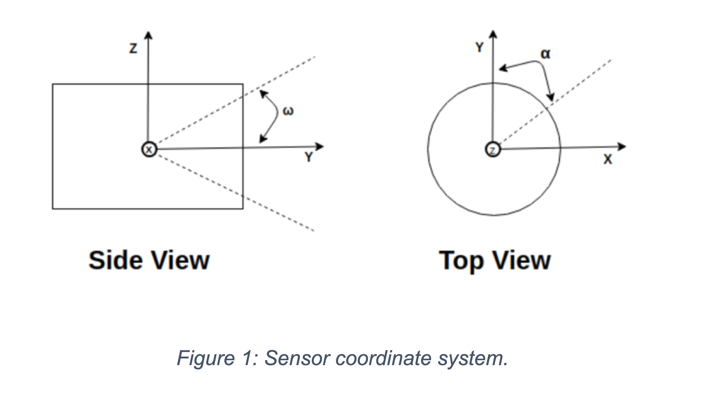
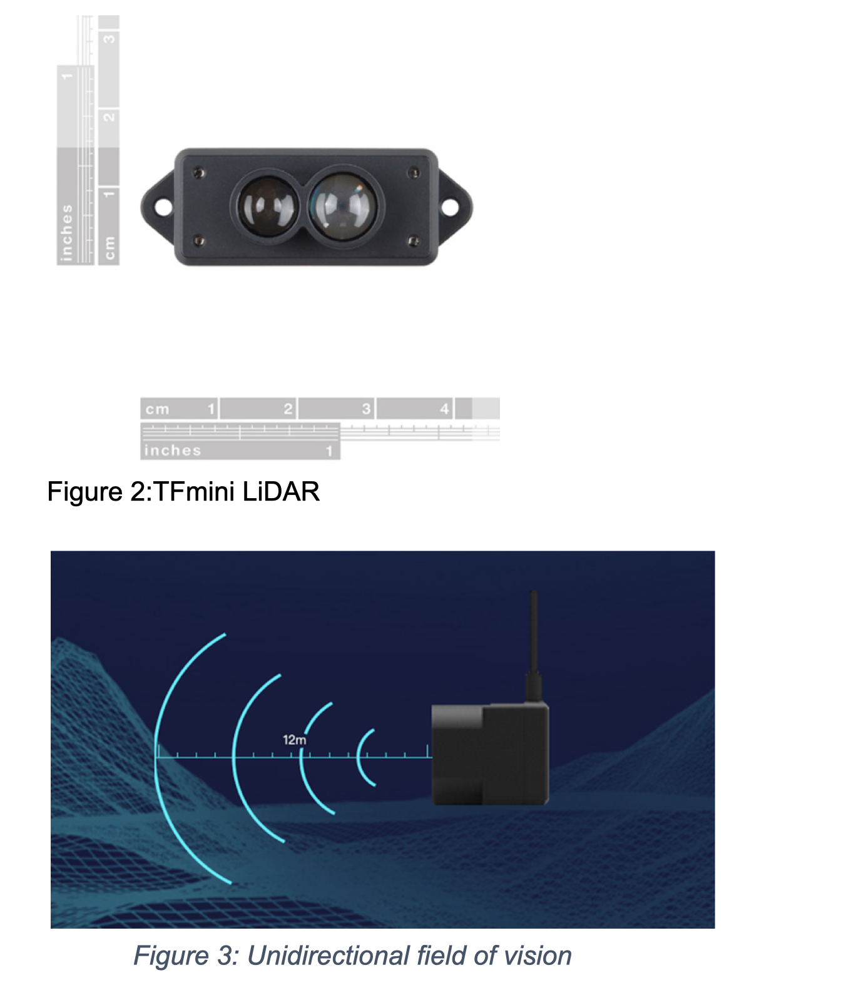
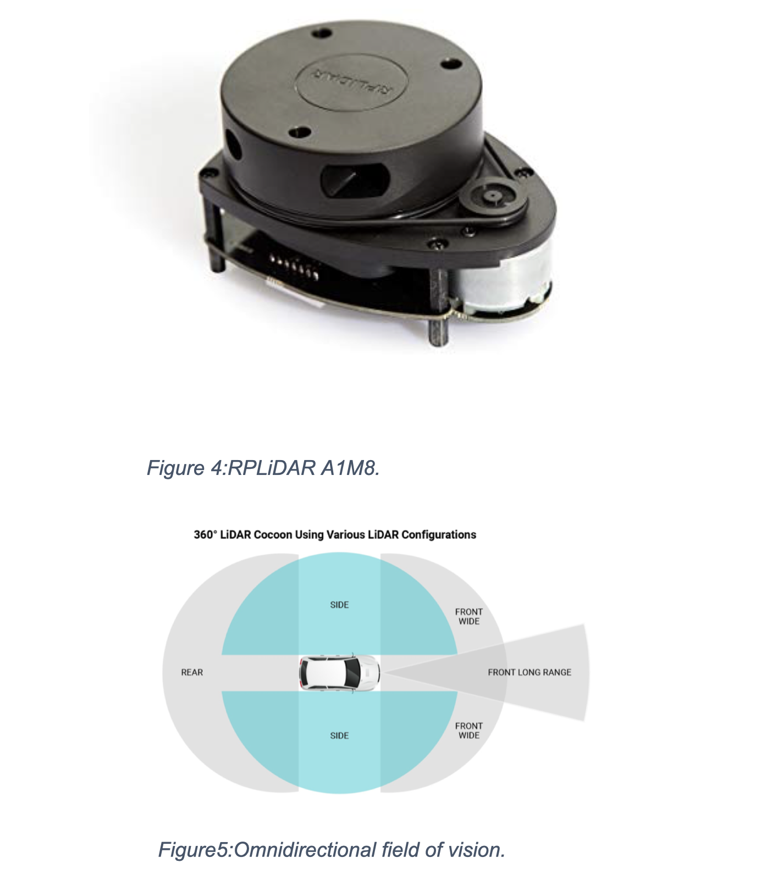

Our choice LiDAR
Authors: Miracle C. Nkemdirim & Ekene A. Okonkwo
Faculty of Electrical Engineering, University of Ottawa, ON K1N 6Y7, Canada
What is LIDAR ?
When it comes to distance or object sensing, there are a lot of options currently in the market. From RADAR to Sonar to ultrasonic sensors, with applications in several fields like conveyor systems, to mobile systems and vehicular systems. In self-driving vehicles, LiDAR and RADAR seem to be leading the way in the development of this field. The robot provided by the client was already equipped with Infrared sensors but after much deliberation, our team decided to add a more effective and modern technology in the form of LiDAR. It emits infrared light pulses instead of radio waves and measures how long they take to come back after hitting nearby objects. The time between the output laser and the reflected pulse allows the LiDAR sensor to calculate the distance to each object precisely, based on the speed of light. The LiDAR then returns the reading in a spherical coordinate system. This is done by defining a point with radius r, elevation, and azimuth. Elevation angle, ω is in the Z-Y plane measured from Y-axis.Azimuth angle, α is in the X-Y plane measured from Y-axis. Azimuth angle depends upon the position at which a laser is fired and is registered at the time of firing. The Elevation angle for a laser emitter is fixed in a sensor. The radius is calculated using the time taken by the beam to come back.
As the Cartesian coordinate system is easier to work with, the spherical system can be converted to Cartesian using the equations below: The drivers of LiDAR sensors usually do this so computation of this isn’t necessary. This technology is superior to RADAR in the sense that it offers precise 3D measurement data over short to long ranges in the most difficult conditions while the latter lacks when it comes to resolution and struggles when mapping out finer details. Therefore, it is a much better choice when it comes to autonomous vehicles. The LiDAR comes in different types: unidirectional and 360 omnidirectional.The unidirectional offers a field of view in only one direction. Therefore, if the robot is equipped with this, 4 are needed to equip on each side of the robot structure. This has certain drawbacks particularly due to the introduction of blind spots as the sensors might not be able to cover the full field of vision of the robot.
The 360 omnidirectional on the other hand needs only to be mounted on top of the robot structure and has a complete view of all the surroundings thereby eliminating the risk of any blind spots.
After searching the market for the different products, two specific ones were narrowed down for each; the TFmini LiDAR and DE-LIDAR TF02 for the unidirectional and the RPLIDAR A1M8 and RPLIDAR S1-360 for the 360 omnidirectional. In conclusion, the best choice would be the RPLIDAR A1M8 because of its sensing prowess and low-cost.
Web References
[1] https://www.ucsusa.org/resources/self-driving-cars-101
[2] https://hackernoon.com/lidar-basics-the-coordinate-system-a26529615df9
[3] https://www.robotshop.com/en/rplidar-a1m8-360-degree-laser-scanner-development-kit.html